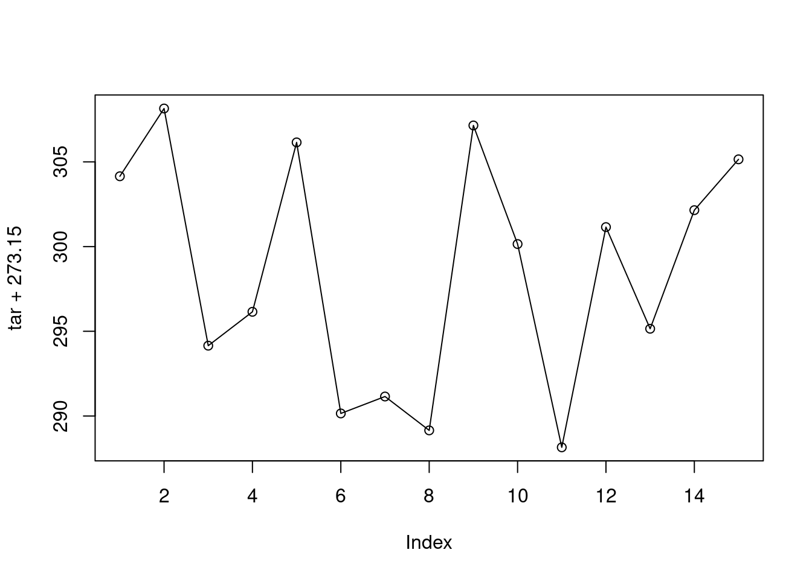
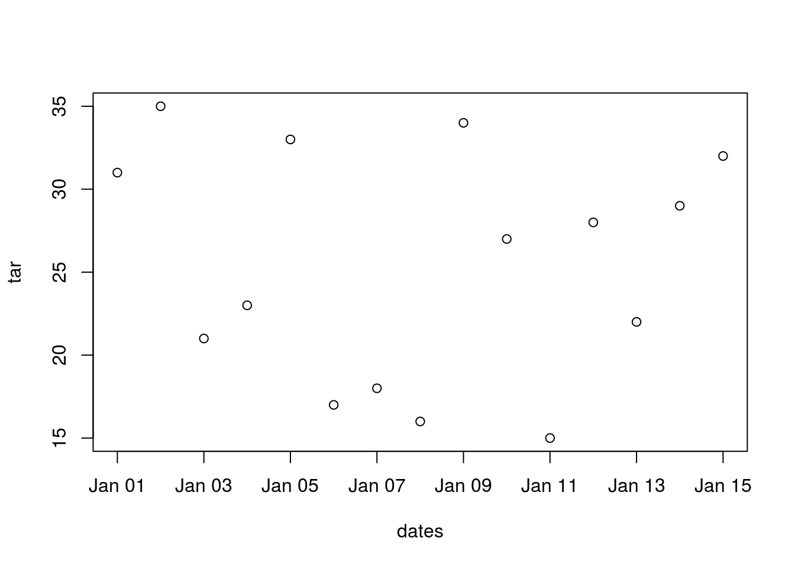

7.5 Dataframe
Um dataframe é o objeto mais usado para guardar conjunto de dados na forma de tabela (tabulares ou planos).
A estrutura de um dataframe é retangular como a de uma matriz. Mas tem a vantagem de armazenar vetores de diferentes tipos (character, numeric, logical e etc) nas suas colunas. O que não é possível em uma matriz. Ou seja é uma estrutura de armazenamento de dados heterogênea. Matrix, arrays e vector só armazenam dados homogêneos.
Cada linha do dataframe corresponde a um registro da tabela. Cada coluna corresponde a uma variável a ser armazenada para cada registro da tabela.
7.5.1 Criação
Uma das formas mais simples de se criar um dataframe é através da função data.frame().
# criando um dataframe
dados <- data.frame(
datas = c(
"2013-01-01", "2013-01-02", "2013-01-03", "2013-01-04", "2013-01-05",
"2013-01-06", "2013-01-07", "2013-01-08", "2013-01-09", "2013-01-10",
"2013-01-11", "2013-01-12", "2013-01-13", "2013-01-14", "2013-01-15"
),
cidade = rep("Santa Maria", 15),
tar = c(31, 35, 21, 23, 33, 17, 18, 16, 34, 27, 15, 28, 22, 29, 32)
)
dados
#> datas cidade tar
#> 1 2013-01-01 Santa Maria 31
#> 2 2013-01-02 Santa Maria 35
#> 3 2013-01-03 Santa Maria 21
#> 4 2013-01-04 Santa Maria 23
#> 5 2013-01-05 Santa Maria 33
#> 6 2013-01-06 Santa Maria 17
#> 7 2013-01-07 Santa Maria 18
#> 8 2013-01-08 Santa Maria 16
#> 9 2013-01-09 Santa Maria 34
#> 10 2013-01-10 Santa Maria 27
#> 11 2013-01-11 Santa Maria 15
#> 12 2013-01-12 Santa Maria 28
#> 13 2013-01-13 Santa Maria 22
#> 14 2013-01-14 Santa Maria 29
#> 15 2013-01-15 Santa Maria 32
class(dados)
#> [1] "data.frame"
is.data.frame(dados)
#> [1] TRUEPara um diagnóstico rápido das variáveis de um dataframe usamos a função str():
# descrição geral do conjunto de dados
str(dados)
#> 'data.frame': 15 obs. of 3 variables:
#> $ datas : Factor w/ 15 levels "2013-01-01","2013-01-02",..: 1 2 3 4 5 6 7 8 9 10 ...
#> $ cidade: Factor w/ 1 level "Santa Maria": 1 1 1 1 1 1 1 1 1 1 ...
#> $ tar : num 31 35 21 23 33 17 18 16 34 27 ...A saída da função str()indica que há duas variáveis da classe factor. Em um dataframe vetores do tipo character são automaticamente convertidos em factor. Este é o comportamento default da função data.frame(). Para desabilitar essa conversão você precisa definir o parâmetro stringsAsFactors = FALSE na função data.frame(). Vamos recriar o dataframe dados sem a conversão de character para factor.
# criando um dataframe
dados <- data.frame(
datas = c(
"2013-01-01", "2013-01-02", "2013-01-03", "2013-01-04", "2013-01-05",
"2013-01-06", "2013-01-07", "2013-01-08", "2013-01-09", "2013-01-10",
"2013-01-11", "2013-01-12", "2013-01-13", "2013-01-14", "2013-01-15"
),
cidade = rep("Santa Maria", 15),
tar = c(31, 35, 21, 23, 33, 17, 18, 16, 34, 27, 15, 28, 22, 29, 32),
stringsAsFactors = FALSE
)
str(dados)
#> 'data.frame': 15 obs. of 3 variables:
#> $ datas : chr "2013-01-01" "2013-01-02" "2013-01-03" "2013-01-04" ...
#> $ cidade: chr "Santa Maria" "Santa Maria" "Santa Maria" "Santa Maria" ...
#> $ tar : num 31 35 21 23 33 17 18 16 34 27 ...A função summary() fornece um resumo estatístico das variáveis (colunas) de um dataframe.
# resumo estatístico dos dados
summary(dados)
#> datas cidade tar
#> Length:15 Length:15 Min. :15.0
#> Class :character Class :character 1st Qu.:19.5
#> Mode :character Mode :character Median :27.0
#> Mean :25.4
#> 3rd Qu.:31.5
#> Max. :35.07.5.2 Atributos de um dataframe
dataframe é uma estrutura de dados avançada e possui diversos atributos.
# atributos
attributes(dados)
#> $names
#> [1] "datas" "cidade" "tar"
#>
#> $row.names
#> [1] 1 2 3 4 5 6 7 8 9 10 11 12 13 14 15
#>
#> $class
#> [1] "data.frame"
# atributos armazenados em uma lista
str(attributes(dados))
#> List of 3
#> $ names : chr [1:3] "datas" "cidade" "tar"
#> $ row.names: int [1:15] 1 2 3 4 5 6 7 8 9 10 ...
#> $ class : chr "data.frame"
# número de colunas
ncol(dados)
#> [1] 3
# número de linhas
nrow(dados)
#> [1] 15
# dimensões
dim(dados)
#> [1] 15 3
# nomes podem ser atribuídos as linhas e as colunas
rownames(dados)
#> [1] "1" "2" "3" "4" "5" "6" "7" "8" "9" "10" "11" "12" "13" "14"
#> [15] "15"
# novos nomes para as linhas de dados
rownames(dados) <- paste0("linha", rownames(dados))
dados
#> datas cidade tar
#> linha1 2013-01-01 Santa Maria 31
#> linha2 2013-01-02 Santa Maria 35
#> linha3 2013-01-03 Santa Maria 21
#> linha4 2013-01-04 Santa Maria 23
#> linha5 2013-01-05 Santa Maria 33
#> linha6 2013-01-06 Santa Maria 17
#> linha7 2013-01-07 Santa Maria 18
#> linha8 2013-01-08 Santa Maria 16
#> linha9 2013-01-09 Santa Maria 34
#> linha10 2013-01-10 Santa Maria 27
#> linha11 2013-01-11 Santa Maria 15
#> linha12 2013-01-12 Santa Maria 28
#> linha13 2013-01-13 Santa Maria 22
#> linha14 2013-01-14 Santa Maria 29
#> linha15 2013-01-15 Santa Maria 32
# removendo nomes das linhas
rownames(dados) <- NULL
dados
#> datas cidade tar
#> 1 2013-01-01 Santa Maria 31
#> 2 2013-01-02 Santa Maria 35
#> 3 2013-01-03 Santa Maria 21
#> 4 2013-01-04 Santa Maria 23
#> 5 2013-01-05 Santa Maria 33
#> 6 2013-01-06 Santa Maria 17
#> 7 2013-01-07 Santa Maria 18
#> 8 2013-01-08 Santa Maria 16
#> 9 2013-01-09 Santa Maria 34
#> 10 2013-01-10 Santa Maria 27
#> 11 2013-01-11 Santa Maria 15
#> 12 2013-01-12 Santa Maria 28
#> 13 2013-01-13 Santa Maria 22
#> 14 2013-01-14 Santa Maria 29
#> 15 2013-01-15 Santa Maria 32
# mesmo que names(dados)
colnames(dados)
#> [1] "datas" "cidade" "tar"
# ou simplesmente
names(dados)
#> [1] "datas" "cidade" "tar"7.5.3 Acesso as variáveis de um dataframe
Existem várias formas de acessar as variáveis de um dataframe. Os operadores para extração de elementos são os mesmos utilizados para extração de elementos de uma lista: [, [[ e $. Mas observe a diferença nos resultados extraídos com cada operador.
# variáveis do dataframe
names(dados)
#> [1] "datas" "cidade" "tar"
# acessando os dados de temperatura
dados[, 3]
#> [1] 31 35 21 23 33 17 18 16 34 27 15 28 22 29 32
# ou
dados[, "tar"]
#> [1] 31 35 21 23 33 17 18 16 34 27 15 28 22 29 32
# ou
dados$tar
#> [1] 31 35 21 23 33 17 18 16 34 27 15 28 22 29 32
is.vector(dados$tar)
#> [1] TRUE
# note a diferença no resultado da extração
dados["tar"]
#> tar
#> 1 31
#> 2 35
#> 3 21
#> 4 23
#> 5 33
#> 6 17
#> 7 18
#> 8 16
#> 9 34
#> 10 27
#> 11 15
#> 12 28
#> 13 22
#> 14 29
#> 15 32
class(dados["tar"])
#> [1] "data.frame"
dados[["tar"]]
#> [1] 31 35 21 23 33 17 18 16 34 27 15 28 22 29 32
class(dados[["tar"]])
#> [1] "numeric"
dados[, "tar"]
#> [1] 31 35 21 23 33 17 18 16 34 27 15 28 22 29 32
class(dados[, "tar"])
#> [1] "numeric"Portanto dataframes tem estrutura retangular similar a das matrizes e algumas de listas (diferentes colunas podem conter diferentes tipos de objetos).
7.5.3.1 Função with()
O acesso as variáveis de um dataframe também é possível com a função with(data, expr).
# acesso a variáveis de um dataframe
with(data = dados, expr = tar)
#> [1] 31 35 21 23 33 17 18 16 34 27 15 28 22 29 32
tarK <- with(data = dados, expr = tar + 273.15)
tarK
#> [1] 304.15 308.15 294.15 296.15 306.15 290.15 291.15 289.15 307.15 300.15
#> [11] 288.15 301.15 295.15 302.15 305.15
# gráfico de uma variável usando with()
with(data = dados,
# parâmetro expr geralmente não é mostrado
plot(tar + 273.15, type = "o")
)
O argumento pode ser substituído por qualquer expressão ou conjunto de expressões que envolvam as variáveis do dataframe de entrada.
Quando houver uma expressão com mais de uma linha você agrupa o código usando chaves {}.
with(dados,
{
dates <- as.Date(datas)
plot(dates, tar)
}
)
7.5.4 Indexação, seleção e substituição
Todos esquemas de indexação usados para matrizes (seleção por índices, nomes, vetores lógicos - ver Aula9) podem ser usados com dataframes.
# exclui a primeiro e a última observação para todas variáveis
dados[-c(1, nrow(dados)), ]
#> datas cidade tar
#> 2 2013-01-02 Santa Maria 35
#> 3 2013-01-03 Santa Maria 21
#> 4 2013-01-04 Santa Maria 23
#> 5 2013-01-05 Santa Maria 33
#> 6 2013-01-06 Santa Maria 17
#> 7 2013-01-07 Santa Maria 18
#> 8 2013-01-08 Santa Maria 16
#> 9 2013-01-09 Santa Maria 34
#> 10 2013-01-10 Santa Maria 27
#> 11 2013-01-11 Santa Maria 15
#> 12 2013-01-12 Santa Maria 28
#> 13 2013-01-13 Santa Maria 22
#> 14 2013-01-14 Santa Maria 29
# temperatura dos primeiros 5 dias
dados[1:5, 3]
#> [1] 31 35 21 23 33
# temperatura no dia 2013-01-09
dados[dados$datas == "2013-01-09", "tar"]
#> [1] 34
# acrescentar uma nova variavel
dados$prec <- c(rep(0, 5), 10, 18, 4, 0, 0, 5, 0, 0, 2, 0)
dados
#> datas cidade tar prec
#> 1 2013-01-01 Santa Maria 31 0
#> 2 2013-01-02 Santa Maria 35 0
#> 3 2013-01-03 Santa Maria 21 0
#> 4 2013-01-04 Santa Maria 23 0
#> 5 2013-01-05 Santa Maria 33 0
#> 6 2013-01-06 Santa Maria 17 10
#> 7 2013-01-07 Santa Maria 18 18
#> 8 2013-01-08 Santa Maria 16 4
#> 9 2013-01-09 Santa Maria 34 0
#> 10 2013-01-10 Santa Maria 27 0
#> 11 2013-01-11 Santa Maria 15 5
#> 12 2013-01-12 Santa Maria 28 0
#> 13 2013-01-13 Santa Maria 22 0
#> 14 2013-01-14 Santa Maria 29 2
#> 15 2013-01-15 Santa Maria 32 0Uma função específica para gerar subconjunto de dados em dataframes é a subset().
# subconjunto baseado em condição lógica
ss1 <- subset(dados, datas == "2013-01-09", select = "tar")
ss1
#> tar
#> 9 34
# subconjunto baseado em condição lógica
ss2 <- subset(dados, tar > 26 & prec > 0)
ss2
#> datas cidade tar prec
#> 14 2013-01-14 Santa Maria 29 2
# subconjunto baseado em condição lógica
ss3 <- subset(dados, tar > 26 | prec > 0)
ss3
#> datas cidade tar prec
#> 1 2013-01-01 Santa Maria 31 0
#> 2 2013-01-02 Santa Maria 35 0
#> 5 2013-01-05 Santa Maria 33 0
#> 6 2013-01-06 Santa Maria 17 10
#> 7 2013-01-07 Santa Maria 18 18
#> 8 2013-01-08 Santa Maria 16 4
#> 9 2013-01-09 Santa Maria 34 0
#> 10 2013-01-10 Santa Maria 27 0
#> 11 2013-01-11 Santa Maria 15 5
#> 12 2013-01-12 Santa Maria 28 0
#> 14 2013-01-14 Santa Maria 29 2
#> 15 2013-01-15 Santa Maria 32 0
# subconjunto baseado em condição lógica
ss4 <- subset(dados,
datas %in% c("2013-01-09", "2013-01-13", "2013-01-15"),
select = -cidade
)
ss4
#> datas tar prec
#> 9 2013-01-09 34 0
#> 13 2013-01-13 22 0
#> 15 2013-01-15 32 0
# subconjunto baseado em condição lógica
ss4 <- subset(dados,
!datas %in% c("2013-01-09", "2013-01-13", "2013-01-15"),
select = -cidade
)
ss4
#> datas tar prec
#> 1 2013-01-01 31 0
#> 2 2013-01-02 35 0
#> 3 2013-01-03 21 0
#> 4 2013-01-04 23 0
#> 5 2013-01-05 33 0
#> 6 2013-01-06 17 10
#> 7 2013-01-07 18 18
#> 8 2013-01-08 16 4
#> 10 2013-01-10 27 0
#> 11 2013-01-11 15 5
#> 12 2013-01-12 28 0
#> 14 2013-01-14 29 2Uma função específica para alteração, remoção e inclusão de variáveis em um dataframe é a transform(). Essa função é mais indicada para alteração de mais de uma variável (ao mesmo tempo) de um dataframe.
# mudança do dataframe, alteração de várias variáveis
dados <- transform(dados,
cidade = ifelse(1:nrow(dados) > 8, "Sao Sepe", cidade),
datas = c(datas[1:8], datas[1:7]),
anomalias = ifelse(cidade == "Santa Maria",
tar - mean(tar[cidade == "Santa Maria"]),
tar - mean(tar[cidade == "Sao Sepe"])
)
)
dados
#> datas cidade tar prec anomalias
#> 1 2013-01-01 Santa Maria 31 0 5.6
#> 2 2013-01-02 Santa Maria 35 0 9.6
#> 3 2013-01-03 Santa Maria 21 0 -4.4
#> 4 2013-01-04 Santa Maria 23 0 -2.4
#> 5 2013-01-05 Santa Maria 33 0 7.6
#> 6 2013-01-06 Santa Maria 17 10 -8.4
#> 7 2013-01-07 Santa Maria 18 18 -7.4
#> 8 2013-01-08 Santa Maria 16 4 -9.4
#> 9 2013-01-01 Sao Sepe 34 0 8.6
#> 10 2013-01-02 Sao Sepe 27 0 1.6
#> 11 2013-01-03 Sao Sepe 15 5 -10.4
#> 12 2013-01-04 Sao Sepe 28 0 2.6
#> 13 2013-01-05 Sao Sepe 22 0 -3.4
#> 14 2013-01-06 Sao Sepe 29 2 3.6
#> 15 2013-01-07 Sao Sepe 32 0 6.6
# alterar só uma variavel, anomalia normalizada
dados$anomalias.norm <- ifelse(dados$cidade == "Santa Maria",
dados$anomalias / sd(dados$anomalias[dados$cidade == "Santa Maria"]),
dados$anomalias / sd(dados$anomalias[dados$cidade == "Sao Sepe"])
)
dados
#> datas cidade tar prec anomalias anomalias.norm
#> 1 2013-01-01 Santa Maria 31 0 5.6 0.732167
#> 2 2013-01-02 Santa Maria 35 0 9.6 1.255143
#> 3 2013-01-03 Santa Maria 21 0 -4.4 -0.575274
#> 4 2013-01-04 Santa Maria 23 0 -2.4 -0.313786
#> 5 2013-01-05 Santa Maria 33 0 7.6 0.993655
#> 6 2013-01-06 Santa Maria 17 10 -8.4 -1.098250
#> 7 2013-01-07 Santa Maria 18 18 -7.4 -0.967506
#> 8 2013-01-08 Santa Maria 16 4 -9.4 -1.228994
#> 9 2013-01-01 Sao Sepe 34 0 8.6 1.339211
#> 10 2013-01-02 Sao Sepe 27 0 1.6 0.249156
#> 11 2013-01-03 Sao Sepe 15 5 -10.4 -1.619512
#> 12 2013-01-04 Sao Sepe 28 0 2.6 0.404878
#> 13 2013-01-05 Sao Sepe 22 0 -3.4 -0.529456
#> 14 2013-01-06 Sao Sepe 29 2 3.6 0.560600
#> 15 2013-01-07 Sao Sepe 32 0 6.6 1.0277677.5.5 Combinando dataframes
coords_df <- data.frame(
lon = c(rep(-45, 8), rep(-45.1, 7)), # longitudes
lat = c(rep(-23, 8), rep(-23.1, 7))
) # latitudes
d <- cbind(dados, coords_df)
d
#> datas cidade tar prec anomalias anomalias.norm lon lat
#> 1 2013-01-01 Santa Maria 31 0 5.6 0.732167 -45.0 -23.0
#> 2 2013-01-02 Santa Maria 35 0 9.6 1.255143 -45.0 -23.0
#> 3 2013-01-03 Santa Maria 21 0 -4.4 -0.575274 -45.0 -23.0
#> 4 2013-01-04 Santa Maria 23 0 -2.4 -0.313786 -45.0 -23.0
#> 5 2013-01-05 Santa Maria 33 0 7.6 0.993655 -45.0 -23.0
#> 6 2013-01-06 Santa Maria 17 10 -8.4 -1.098250 -45.0 -23.0
#> 7 2013-01-07 Santa Maria 18 18 -7.4 -0.967506 -45.0 -23.0
#> 8 2013-01-08 Santa Maria 16 4 -9.4 -1.228994 -45.0 -23.0
#> 9 2013-01-01 Sao Sepe 34 0 8.6 1.339211 -45.1 -23.1
#> 10 2013-01-02 Sao Sepe 27 0 1.6 0.249156 -45.1 -23.1
#> 11 2013-01-03 Sao Sepe 15 5 -10.4 -1.619512 -45.1 -23.1
#> 12 2013-01-04 Sao Sepe 28 0 2.6 0.404878 -45.1 -23.1
#> 13 2013-01-05 Sao Sepe 22 0 -3.4 -0.529456 -45.1 -23.1
#> 14 2013-01-06 Sao Sepe 29 2 3.6 0.560600 -45.1 -23.1
#> 15 2013-01-07 Sao Sepe 32 0 6.6 1.027767 -45.1 -23.1
# usando a própria função data.frame()
d2 <- data.frame(dados, coords_df, stringsAsFactors = FALSE)
d2
#> datas cidade tar prec anomalias anomalias.norm lon lat
#> 1 2013-01-01 Santa Maria 31 0 5.6 0.732167 -45.0 -23.0
#> 2 2013-01-02 Santa Maria 35 0 9.6 1.255143 -45.0 -23.0
#> 3 2013-01-03 Santa Maria 21 0 -4.4 -0.575274 -45.0 -23.0
#> 4 2013-01-04 Santa Maria 23 0 -2.4 -0.313786 -45.0 -23.0
#> 5 2013-01-05 Santa Maria 33 0 7.6 0.993655 -45.0 -23.0
#> 6 2013-01-06 Santa Maria 17 10 -8.4 -1.098250 -45.0 -23.0
#> 7 2013-01-07 Santa Maria 18 18 -7.4 -0.967506 -45.0 -23.0
#> 8 2013-01-08 Santa Maria 16 4 -9.4 -1.228994 -45.0 -23.0
#> 9 2013-01-01 Sao Sepe 34 0 8.6 1.339211 -45.1 -23.1
#> 10 2013-01-02 Sao Sepe 27 0 1.6 0.249156 -45.1 -23.1
#> 11 2013-01-03 Sao Sepe 15 5 -10.4 -1.619512 -45.1 -23.1
#> 12 2013-01-04 Sao Sepe 28 0 2.6 0.404878 -45.1 -23.1
#> 13 2013-01-05 Sao Sepe 22 0 -3.4 -0.529456 -45.1 -23.1
#> 14 2013-01-06 Sao Sepe 29 2 3.6 0.560600 -45.1 -23.1
#> 15 2013-01-07 Sao Sepe 32 0 6.6 1.027767 -45.1 -23.1
# verificando se os dois dataframes são idênticos
identical(d, d2)
#> [1] TRUE
# dados de Caçapava
cacapava <- data.frame(
datas = "2013-01-01",
cidade = "Cacapava",
tar = 19,
prec = 0,
anomalias = NA,
anomalias.norm = NA,
lon = -45.1,
lat = -23.2
)
d <- rbind(d, cacapava)
d
#> datas cidade tar prec anomalias anomalias.norm lon lat
#> 1 2013-01-01 Santa Maria 31 0 5.6 0.732167 -45.0 -23.0
#> 2 2013-01-02 Santa Maria 35 0 9.6 1.255143 -45.0 -23.0
#> 3 2013-01-03 Santa Maria 21 0 -4.4 -0.575274 -45.0 -23.0
#> 4 2013-01-04 Santa Maria 23 0 -2.4 -0.313786 -45.0 -23.0
#> 5 2013-01-05 Santa Maria 33 0 7.6 0.993655 -45.0 -23.0
#> 6 2013-01-06 Santa Maria 17 10 -8.4 -1.098250 -45.0 -23.0
#> 7 2013-01-07 Santa Maria 18 18 -7.4 -0.967506 -45.0 -23.0
#> 8 2013-01-08 Santa Maria 16 4 -9.4 -1.228994 -45.0 -23.0
#> 9 2013-01-01 Sao Sepe 34 0 8.6 1.339211 -45.1 -23.1
#> 10 2013-01-02 Sao Sepe 27 0 1.6 0.249156 -45.1 -23.1
#> 11 2013-01-03 Sao Sepe 15 5 -10.4 -1.619512 -45.1 -23.1
#> 12 2013-01-04 Sao Sepe 28 0 2.6 0.404878 -45.1 -23.1
#> 13 2013-01-05 Sao Sepe 22 0 -3.4 -0.529456 -45.1 -23.1
#> 14 2013-01-06 Sao Sepe 29 2 3.6 0.560600 -45.1 -23.1
#> 15 2013-01-07 Sao Sepe 32 0 6.6 1.027767 -45.1 -23.1
#> 16 2013-01-01 Cacapava 19 0 NA NA -45.1 -23.27.5.6 Teste e Coerção
Podemos converter um objeto para dataframe com as.data.frame():
Um vetor é transformado em um dataframe de uma coluna;
- Uma lista terá uma coluna para elemento, se os elementos não forem de mesmo tamanho haverá um erro;
Uma matriz cria um dataframe com mesma estrutura de uma matriz;
# convertendo lista para dataframe
sm_l
#> $cidade
#> [1] "Santa Maria"
#>
#> $dados
#> tar prec
#> [1,] 31 300
#> [2,] 35 200
#> [3,] 21 150
#> [4,] 23 120
#> [5,] 33 210
#> [6,] 17 110
#>
#> $lon
#> [1] -45
#>
#> $lat
#> [1] -23
sm_l_df <- as.data.frame(sm_l)
sm_l_df
#> cidade dados.tar dados.prec lon lat
#> 1 Santa Maria 31 300 -45 -23
#> 2 Santa Maria 35 200 -45 -23
#> 3 Santa Maria 21 150 -45 -23
#> 4 Santa Maria 23 120 -45 -23
#> 5 Santa Maria 33 210 -45 -23
#> 6 Santa Maria 17 110 -45 -23
# convertendo array para dataframe
v
#> [1] 3 100 NA NA 6
v_df <- as.data.frame(v)
# convertendo vetor para dataframe
temp90_df <- as.data.frame(temp90)
# convertendo matrix para dataframe
mat
#> [,1] [,2] [,3] [,4]
#> [1,] 0 1 -1 -2
#> [2,] 3 5 -5 0
mat_df <- as.data.frame(mat)
names(mat_df)
#> [1] "V1" "V2" "V3" "V4"
mat_df
#> V1 V2 V3 V4
#> 1 0 1 -1 -2
#> 2 3 5 -5 0
# testes
is.data.frame(mat_df)
#> [1] TRUE
class(v_df)
#> [1] "data.frame"